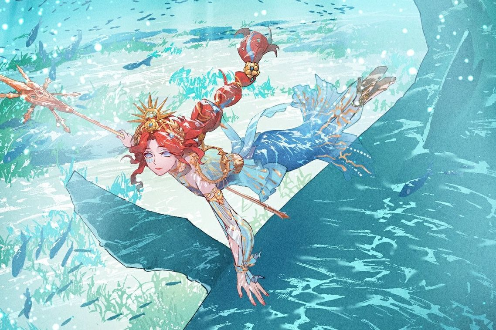
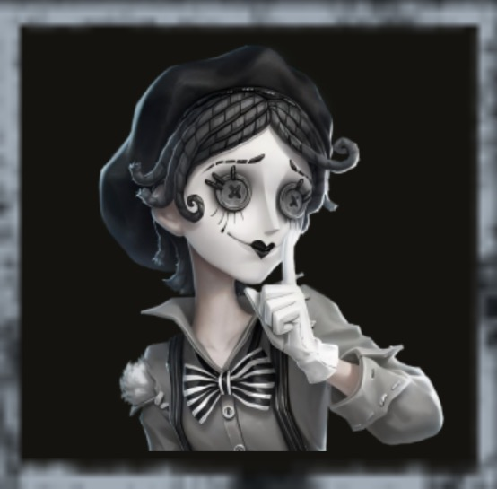
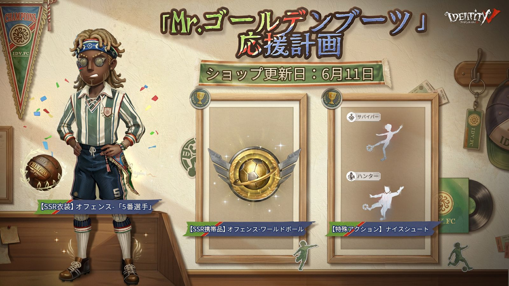
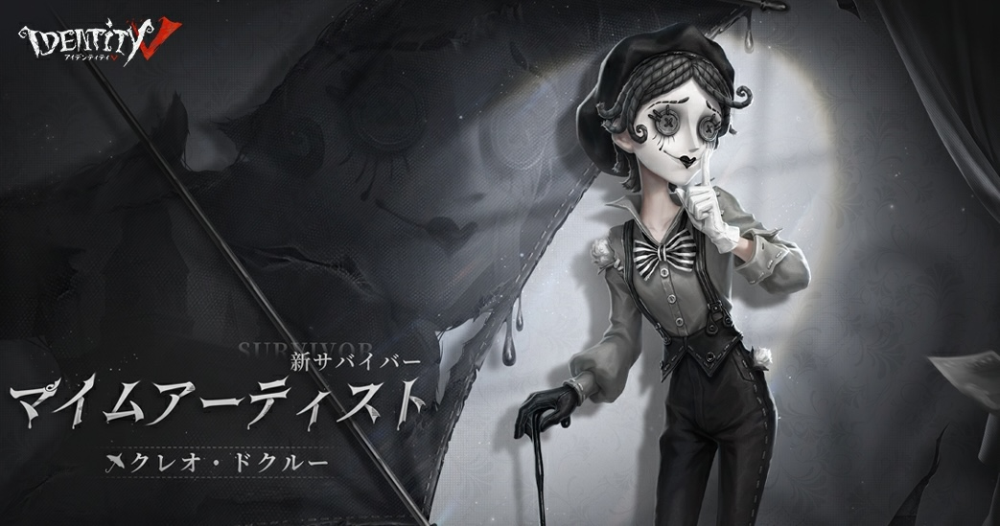
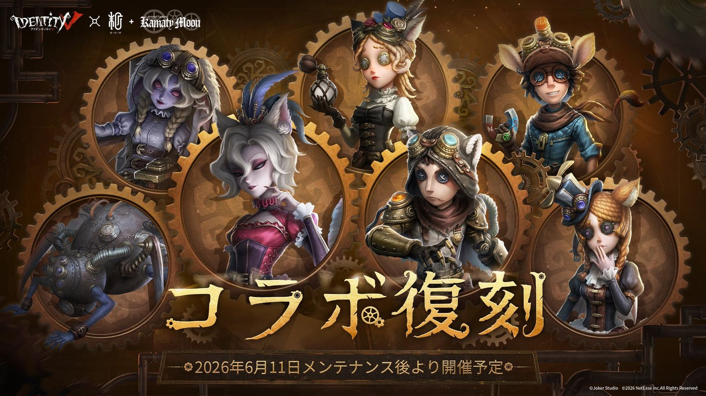
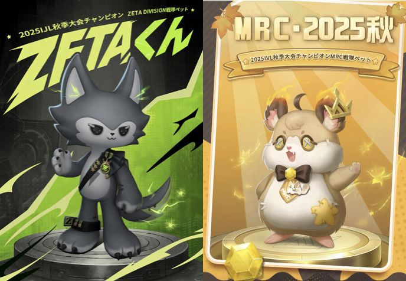
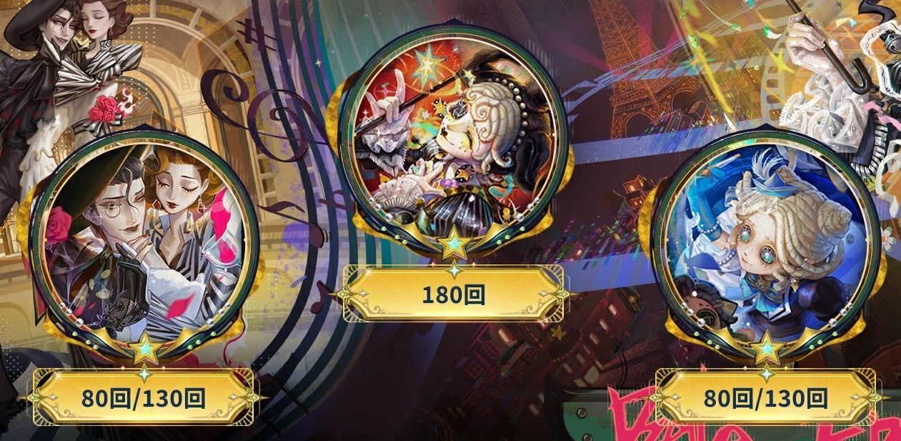
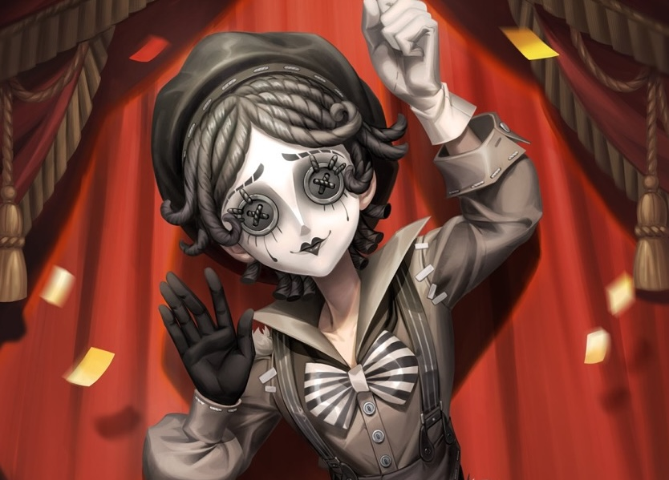

IdentityV（第五人格）の2026年6月に実施されたアップデート・イベント・キャラ調整のまとめです。
2026.6.25現在

バージョンイベント「炎昼の海声」開催！
伝説の遺跡に隠された秘宝「ペラガヤの心」を求めて深海へ！ログイン・対戦・期間限定モードに参加して「ホラ貝」を集め、泣き虫【SSR携帯品】-ペラガヤの心、祭司【SR衣装】-メガネモチノウオ、特殊アクションなどの豪華ボーナスと交換できます！
イベント期間：2026年6月25日メンテナンス後〜2026年7月15日23時59分
詳細はこちら
へむへむの一言
泣き虫のSSR携帯品が無料でもらえちゃう、個人的には漁師（グレイス）の衣装がかわいくて絶対購入するべし！
「トゥルース&リーズニング」ストーリー復刻！
【嵐の夜の「サプライズ」】ストーリーが復刻！全て体験すると【携帯品】共通-願い、【衣装】写真家-「謎」などの豪華ボーナスを獲得できます！
デイリーログインでイベントアイコン枠・スコープ・欠片も獲得可能！
イベント期間：2026年6月25日メンテナンス後〜2026年7月29日23時59分
へむへむの一言
「トゥルース&リーズニング」のストーリーが復刻！衣装を取り忘れた人は必ずとっておこう！復刻イベントなので再々復刻はなさそう！？
2026.6.18現在

新モード「手記の加筆」が実装！
謎めいたミステリー作家「オルフェウス」の小説の世界を探検する新モードが登場！マップを探索し、【詞章】を集めて書斎で提出すると真相解明成功で脱出できます。
現在は【サバイバーモード】のみプレイ可能で、智者・主人公・メッセンジャーの3職業が使用可能！初のプレイアブルマップ【災いの女】も実装されました。
シーズンタスクを全て達成すると、モード専用のシーズン限定ペットも獲得できます。
S0シーズン期間：2026年6月18日〜10月29日
詳細はこちら
へむへむの一言
新モード「手記の加筆」が登場！噂ではガンゲーム要素もあるとか、、今日からがちるしかないね！

B.Duckコラボイベント第三弾「アヒルティブ」な毎日を！開催！
対戦タスクをクリアすると、【アイコン】【アイコン枠】【落書き】Pinky・Teal、【SRペット】Tiny
Tealなどの豪華コラボボーナスを獲得できます！
【SSR衣装】弓使い-Pinky、納棺師-Tealが1388エコー（初週15%オフ・1178エコー）で登場！【SRペット】Tiny
Pinkyも488エコー（初週20%オフ・388エコー）で購入可能！
イベント期間：2026年6月18日メンテナンス後〜2026年7月19日23時59分
詳細はこちら
へむへむの一言
コラボSSR衣装弓使いの衣装がかわいくてたまらん！これを即買いだね。

マイムアーティストがランク戦に追加！
観戦画面に感情の欠片の進行度と現在の演目の表示が追加されました。憂鬱の演目で雨傘に吸い込まれた際、画面左側にも抜け出しボタンが出現するようになりました。
キャラクター詳細はこちら
へむへむの一言
ついにマイムアーティストがランクマッチ登場！今のハンター環境を潰してほしい期待の新人。マイムアーティストがファーストチェイスを担う時は必ず3台分できるぐらいの能力をもっているため、おそらく追われないのでいい感じに補助に回ろう。ハンター目線では追わなければダメージを与えるたびに10％解読遅延してくれるためほっとくのが吉
2026.6.11現在

【SSR衣装】オフェンス-「5番選手」がショップに登場！
このゴールを情熱に捧ぐ！【5番選手】パックがサッカーフェス限定30%オフの1718エコーで購入可能！【SSR衣装】単品は20%オフの1108エコー、【SSR携帯品】オフェンス-ワールドボール単品は20%オフの848エコーで販売中！
サッカーフェス期間限定【特殊アクション】ナイスシュート（サバイバー男女・ハンター）も65%オフの98エコーで購入可能！
販売期間：2026年6月11日メンテナンス後〜2026年7月22日23時59分
詳細はこちら

マイムアーティストがショップに登場！手掛かりで購入可能に！
新サバイバー-マイムアーティストが688エコーまたは3568手掛かりで購入可能！
【SR衣装】マイムアーティスト-美しき時代とのパックは20%オフの798エコーで販売中！
パック販売期間：2026年6月11日メンテナンス後〜2026年6月24日23時59分
キャラクター詳細はこちら

【鎌田光司コラボ】SSR衣装が期間限定再登場！
血の女王-女大公、玩具職人-ペーパーウィング、結魂者-再造者、傭兵-砲兵、彫刻師-白兎術士、探鉱者-両面盗賊、調香師-抽出者が各1388エコーで再登場！
対戦タスクを完了するとコラボ限定アイコン枠・アイコン・落書きも獲得できます！
イベント期間：2026年6月11日メンテナンス後〜2026年7月8日23時59分
詳細はこちら
実績勲章システムに新キャラが追加！
幻灯師・闘牛士・「ビリヤードプレイヤー」・「女王蜂」・「歯医者」の勲章機能がアンロック可能になりました！対応キャラのボロい服を獲得するとアンロックされます。
2026.6.3現在

ZETA DIVISION・MRC戦隊限定ペットがショップに登場！
WE ARE ZETA
DIVISION！2025IJL秋季大会優勝記念【ZETAくん】が888エコーで購入可能！初週12%オフ！
我们就是奇迹！2025IVL秋季大会優勝記念【MRC・2025秋】が888エコーで購入可能！初週12%オフ！
販売期間：2026年6月3日メンテナンス後〜2026年6月24日23時59分
戦隊限定落書きが再登場・金リンゴショップに追加！
2021・2022 IVL戦隊限定落書きおよび2023
IJL戦隊限定落書きが1600金リンゴで購入可能！
販売期間：2026年6月3日メンテナンス後〜2027年1月6日23時59分

シーズン真髄 S42・真髄3が開放！
【UR衣装】マイムアーティスト-夢旅人、【SSR衣装】蝋人形師-桃色の炎舞曲、【SSR衣装】「少女」-小さな詩人が新たに追加されます！
抽選80/130回達成で対応アイコンを1つ選択、180回達成で【アイコン】マイムアーティスト-夢旅人を獲得できます。

新サバイバー「マイムアーティスト」クレオ・ドクルーがマルチモードで使用可能になりました！
2種類の演目を切り替えながら戦う個性派サバイバー！「愉快な演目」では疑似的な壁と木の板を生成し、「憂鬱の演目」では雨傘を使ってハンターを攻撃・仲間をサポートできます。
キャラクター詳細はこちら
ワールドカップ特別衣装！希少価値が高く今後変える可能性がないかも！？ぜひお見逃しなく